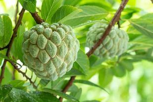
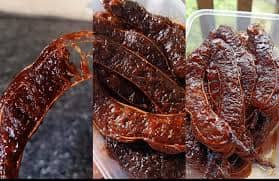
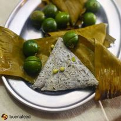

WELCOME TO LOBO BATANGAS
FOOD
ATIS.

- Lobo officially became a municipality in September 27, 1871.
140 years after, two more significant events occurred on the 27th day of September — the launching of the Agro-Ecotourism Industry of Lobo and the declaration of this town being the Atis Capital of the Philippines.
Department of Agriculture Regional Director (Region IV-A) Abelardo R. Bragas shared that Lobo earns an average of 2.5M per year from the town’s harvest of the main produce – atis (sugar apple). Being declared as the country’s atis capital will be part of the legacy and history of Lobo.
Through Dir. Bragas, the Office of the President and the Department of Agriculture awarded one unit of shallow tube well (a tube or pipe vertically set into the ground at depth of 20 to 60 feet for the purpose of suction lifting of water from shallow aquifer – bicol.da.gov.ph) to the LGU.
It was on November 9, 2009 that the proposal for the Agro-Ecotourism Industry of Lobo was presented to the Regional Development Council in Batangas Capitol and was then approved.
“Working together is a success”, according to Dir. Madrigal. This was proven by the public-private partnership established to push for the success of the proposed industry of Lobo.
|
SWEET TAMARIND.

- For a province known to have brazen and brave people, Batangas is studded with sweet pasalubong. Aside from panocha and kalamay, sweet tamarind is another Batangas pasalubong for the sweet tooth.
This sweet pasalubong originated from Lobo, Batangas where tamarind trees abound. It comes in several variants—seedless, with seeds and sweet and spicy.
Where to buy: Public markets (PhP35 to Ph100)
|
PINAIS.

- Pinais na Dulong – Tiny fish “Dulong” wrapped in Banana leaves then steamed.
Mga Sangkap sa Pagluluto ng Pinais na Tawilis
- tawilis
- kalamyas/kamias na tuyo o sariwa
- bawang
- luya
- asin at paminta
- dahon ng saging
- gata ng niyog (optional)
Paraan ng Pagluluto
- 1. Linising mabuti ang tawilis. Alisan ng kaliskis.
- 2. Balutin sa dahon ng tig-lilimang piraso.
- 3. Isapin sa palayok ang tuyo o sariwang kamias, bawang, at luya.
- 4. Isalansan ang binalot na tawilis at timplahan ng asin at paminta.
- 5. Lagyan ng katamtamang tubig. Pabulakin ng may dalawang minuto.
- 6. Pahinain ang apoy at hayaang nakasalang ng may apat na oras o higit pa kung gusting palambutin ng todo ang tinik ng tawilis na parang sardinas.
- 7. Pwedeng lagyan ng gata kung gugustuhin.
|
SINAING NA TULINGAN.

- Sinaing na Tulingan is a Filipino Fish Recipe that translates to braised fish. The recipe makes use of bullet tuna. It is a type of saltwater fish locally known in the Philippines as “tulingan”. This dish is famous in the coastal towns of Batangas.
|